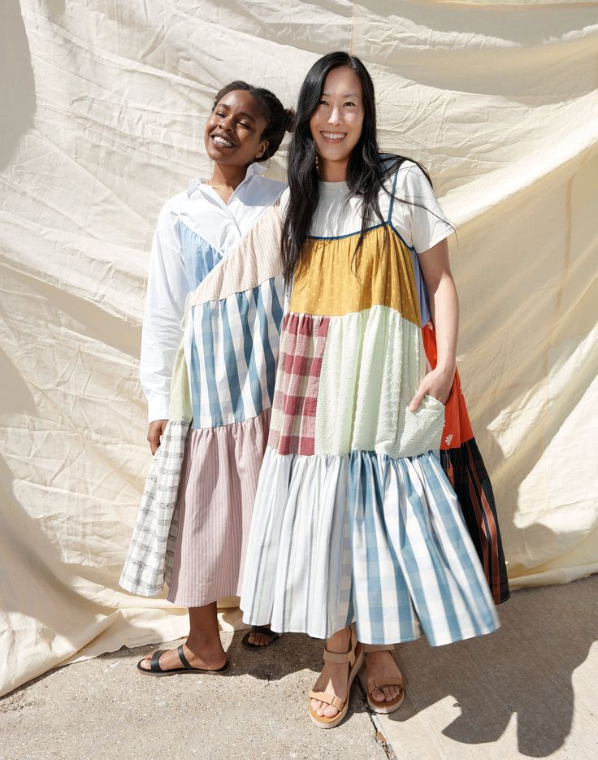

SUSTAINABLE STYLE

REUSE & RECYCLE:
REUSE & RECYCLE:
Why Reuse and Recycle Clothing?
Embracing the practice of reusing and recycling clothing not only reduces waste but also significantly minimizes the environmental impact of the fashion industry. By giving old garments new life through upcycling, donating, selling, or purchasing second-hand items, we actively contribute to conserving resources and reducing carbon emissions associated with clothing production. Moreover, reusing and recycling clothing promotes a more sustainable and circular economy while fostering creativity and individuality in fashion.
Upcycling, also termed "creative reuse," involves transforming a used item into something new and functional. In the context of clothing, upcycling entails revitalizing worn-out garments—whether tattered, broken, ripped, or frayed—into refreshed pieces that can be worn or utilized again. Here are some simple ideas with easy-to-follow instructions. Transform old garments by adding patches or appliqué designs. Use fabric scraps or repurpose pieces from other clothing items to create unique patterns and designs. Patchwork can be applied to jeans, jackets, bags, or even t-shirts, adding color and texture to your wardrobe. Give new life to plain or worn-out clothing with embroidery or embellishments. Stitch intricate designs, patterns, or motifs onto fabric using embroidery thread, beads, sequins, or other decorative elements. Embroidery can be used to repair holes or tears, add personalization, or enhance the aesthetic appeal of garments. Refresh old clothing with fabric dye or paint to create vibrant new colors and designs. Experiment with tie-dye, dip-dye, or ombre techniques to transform plain fabrics into eye-catching masterpieces. Fabric painting allows for limitless creativity, enabling you to customize clothing with hand-painted designs, patterns, or illustrations. Repurpose old garments by cutting them into new shapes or silhouettes and reconstructing them into entirely new pieces. Convert oversized shirts into crop tops, skirts into bags, or sweaters into scarves. Get creative with seam placement, layering, and asymmetrical cuts to create fashion-forward designs with minimal waste.
Shopping second-hand is great for finding unique clothes while helping the planet. You can often get good-quality items at lower prices if shopping only sustainable brands isn't toally within your budget. By buying second-hand, we're part of a cycle where things get reused instead of thrown away, a more impactful way of shopping. Explore the thrift stores in your area and check out a few of the most popular online second-hand clothing marketplaces.
Thrifting online gives you access to a wide range of high-quality items at affordable prices. Whatever you're looking for, online resale platforms offer a diverse selection to suit every style and budget.
UPCYCLE

Patchwork and Appliqué:
Step-By-Step Instructions
Embroidery and Embellishments:
Step-By-Step Instructions
Fabric Dyeing and Painting:
Step-By-Step Instructions
Cutting and Reconstruction:
Step-By-Step Instructions
SHOP SECOND-HAND